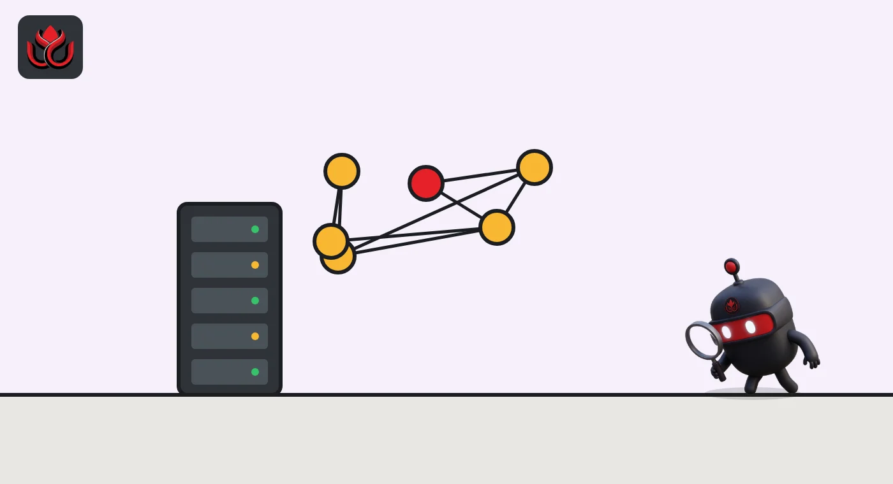
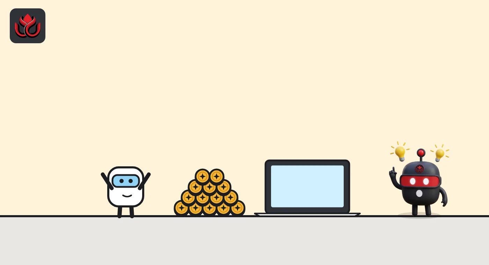

What is Sui? The object-based blockchain that says it settles in 390 ms
Sui is a layer-1 blockchain from Mysten Labs, founded by former Meta engineers, that launched in May 2023. It stores everything as objects with clear owners, runs smart contracts in Move and, by Sui's own figure, settles transactions in roughly 390 milliseconds. SUI has a 10 billion total supply.
Key points
- Sui is a proof-of-stake layer-1 blockchain that launched its mainnet in May 2023. Its founders at Mysten Labs worked on Meta's Diem project and the Move language.
- Instead of accounts with balances, Sui stores state as objects. Each object has an ID, an owner and a version number.
- Simple transfers of owned objects can skip full consensus. Shared objects, such as a trading pool, go through Mysticeti, Sui's consensus protocol.
- SUI is used for gas, staking and governance. Total supply is set at 10 billion, and about 5% was in circulation at launch.
 What DeepSea's data shows
What DeepSea's data shows
Big exchanges hold real money on Sui. DeepSea's Binance page counts $452.11 million of Binance's tracked holdings on the network, and its OKX page shows $119.22 million, OKX's third-largest chain after Ethereum and Bitcoin.
Derivatives traders lean long. On November 2, DeepSea's long/short page showed $19.09 million of SUI longs against $1.41 million of shorts among the traders it follows.

Data: DeepSea (desea.io), checked November 2, 2026, 7:55 a.m. ET.
What is Sui?
Sui is a layer-1 blockchain, meaning it runs its own network rather than settling on another chain. It went live in May 2023, according to CoinGecko. The project came from Mysten Labs, which CoinGecko says was founded by former Meta engineers who worked on the Diem blockchain and the Move programming language. Co-founder Sam Blackshear created Move.
Sui aims at apps that need fast, cheap transactions: payments, trading, games and, more recently, bitcoin-backed finance. Its own blog, in an October 27, 2026, post, puts settlement at "roughly 390 milliseconds" with deterministic finality, which means a confirmed transaction cannot be rolled back.
How does Sui's object model work?
Most blockchains, such as Ethereum, track accounts and their balances. Sui stores everything as objects. Sui's documentation calls an object "a fundamental unit of storage on the network." Each one has a globally unique ID, an owner, a version number that goes up every time it changes, and a record of the last transaction that touched it.
Ownership comes in a few types:
- Address-owned: belongs to one address, like a coin in your wallet.
- Shared: anyone can use it, like a trading pool.
- Immutable: nobody owns it and it can never change, move or be deleted, like a published contract.
- Wrapped: an object stored inside another object.
Every transaction must name its input objects, down to the exact version, before it runs. Sui says this means the chain knows which objects a transaction touches before it executes, so transactions on unrelated objects do not get in each other's way.

How do versions and transactions fit together?
Sui's object model has one more piece that matters for safety. Per the documentation, a transaction does not just name an object; it names an exact object reference: the ID, the version and a digest (a fingerprint of the contents). That way the sender and every validator agree on precisely which state is being used. If the object has changed since, the reference no longer matches.
Each transaction consumes some objects and produces new or changed ones, and each object records the transaction that last produced it. Linked together, these records form a directed acyclic graph, a history you can trace object by object.
Sui also has a newer ownership type, which the docs call consensus-address owned or party objects: owned by one address, but ordered through consensus like a shared object. It covers cases where an asset has a single owner but needs the ordering guarantees of consensus.
How does Sui reach consensus?
Sui uses two paths. According to Sui, transactions that touch only owned objects, such as a simple transfer, can settle without waiting for full consensus. Transactions on shared objects, such as a swap in a DeFi pool, go through full consensus because many users may be touching the same object at once.
The consensus protocol is Mysticeti, a DAG-based design (DAG stands for directed acyclic graph) in which validators certify blocks in parallel rather than one after another. Sui says Mysticeti v2 became the default starting with node version 1.60.

What is the Move language?
Smart contracts on Sui are written in Move, which was first built at Meta for Diem. Sui says Move treats assets as resources that the type system will not let a developer copy or accidentally destroy. In plain terms, a coin in Move behaves more like a physical object than a number in a spreadsheet: it can be moved, but the code cannot clone it by mistake.
What is the SUI token used for?
CoinGecko lists three uses: paying gas fees, staking with validators to help secure the network and earn rewards, and voting on the chain's direction. Sui's token schedule page says total supply is set at 10 billion SUI, and that roughly 5% of all tokens were in circulation at the mainnet launch on May 3, 2023. The rest is released over time on a schedule that, per Sui, depends partly on how the Sui Foundation deploys its allocation. The page shows the current circulating supply only in a chart and through an API. As of 8 a.m. ET on November 2, 2026, CoinGecko showed about 4.14 billion SUI in circulation, roughly 41% of the total, at a price of about $0.88.
Sui also charges for storage. CoinGecko explains that transactions that add data pay a storage fee into a storage fund. That fund is staked, and its rewards go to validators to pay for keeping data over time.
What is new on Sui in 2026?
Bitcoin is the main push. Hashi is Sui's system for using BTC as collateral: as LC Insight reported on November 2, bitcoin stays on the Bitcoin network and a token, hBTC, is minted on Sui. The same report found that the Sui Foundation had promised a Hashi mainnet in October 2026, backed by more than $500 million in capital commitments, while Hashi's own page still said testnet at the start of November.
What are the risks?
- Token supply. With about 5% circulating at launch and a 10 billion cap, future releases add supply. Sui gives the schedule in a chart, not in fixed public dates in text.
- Shared-object bottlenecks. The fast path only works for owned objects. Busy shared objects, such as popular DeFi pools, must take the full consensus path, so the headline 390-millisecond figure is a network claim, not a promise for every app.
- Promised launches. Big plans such as Hashi depend on dates that can slip.
LC Insight analysis
This section is our reading of the facts above, not a statement of fact.
- The object model is Sui's real difference, more than raw speed. Apps that mostly move owned assets get the fast path; apps built around one busy shared pool do not.
- Hashi is the 2026 test. If BTC collateral arrives at scale, Sui gains a use beyond its own token; if it keeps slipping, the $500 million pledge stays on paper.
- Supply is the long tail to track. About 59% of the 10 billion SUI was still outside circulation on November 2, so releases will keep adding supply for years.
What's next
- Hashi's move from testnet to mainnet.
- Circulating supply updates on Sui's token schedule page.
- Further Mysticeti and node releases.
Frequently asked questions
Who created Sui?
Mysten Labs, founded by former Meta engineers who worked on Diem and Move, according to CoinGecko. Co-founder Sam Blackshear created Move.
What is the max supply of SUI?
Sui's token page sets total supply at 10 billion SUI. About 5% was in circulation at the May 3, 2023, launch.
How fast is Sui?
Sui says transactions settle in roughly 390 milliseconds with deterministic finality. Simple transfers of owned objects can skip full consensus.
Disclaimer. This article is based on public information and the sources listed below as of the update time shown. It is for information only and is not investment, legal or tax advice. Figures may change as companies and authorities publish new data.